Convert failed prints into uniform feedstock with a fabricated cutter stack and frame.
Product Development · Manufacturing · Controls
ECOFIL Filament Recycler
A three-machine line that turns failed 3D prints into reusable filament. I lead mechanical design from CAD and analysis through fabrication, sensing, and system integration.
Co-founder / Mechanical Engineer · ECOFIL · Aug 2025–Present · College Station, TX
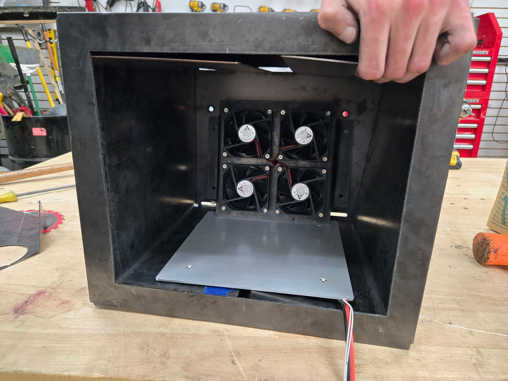
3 stagesOne recycling line
Closed loopThermal and diameter control
CAD → buildMechanical ownership
On budgetFunded prototype
01
The system
Recycling filament is not one mechanism. Waste must be reduced to consistent flake, dried before heating, and extruded at a controlled diameter. Each stage creates the input conditions for the next.
Use heat, airflow, temperature, and humidity feedback to remove moisture before extrusion.
Melt, draw, measure, and spool filament while controlling its final diameter.
02
Stage 1 · Shredder
I designed the cutter stack and machine frame in SolidWorks, then carried the design from full-assembly CAD into a built machine with its control electronics. The engineering goal was repeatable flake size and a structure that could carry the cutter loads.
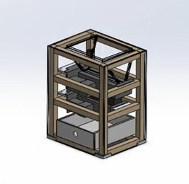
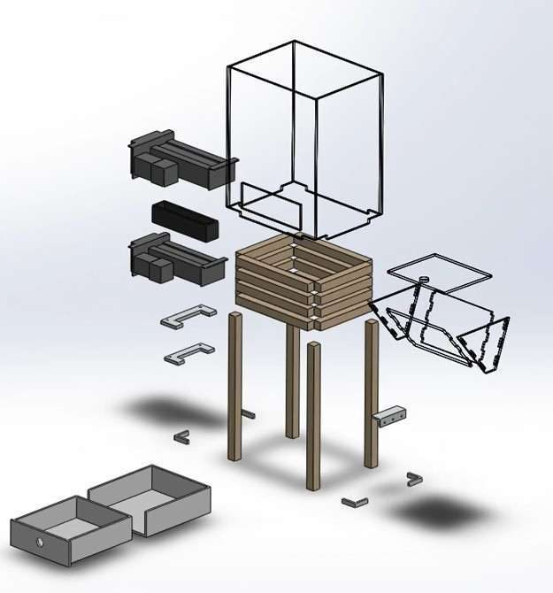
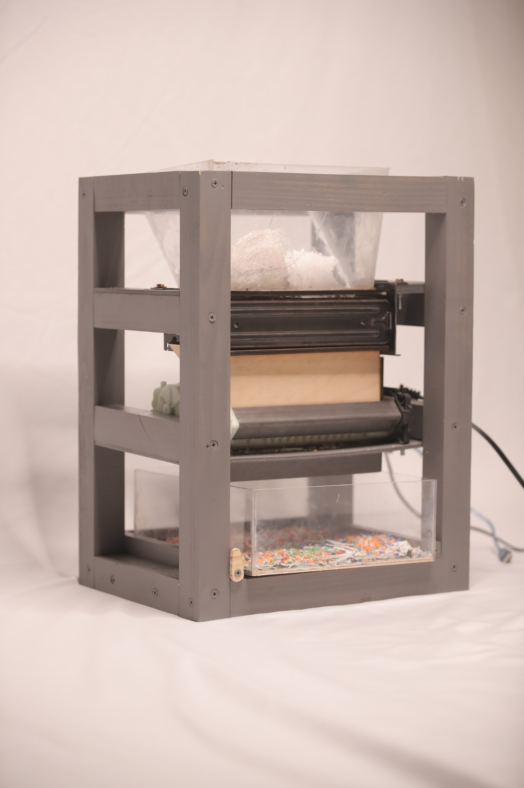
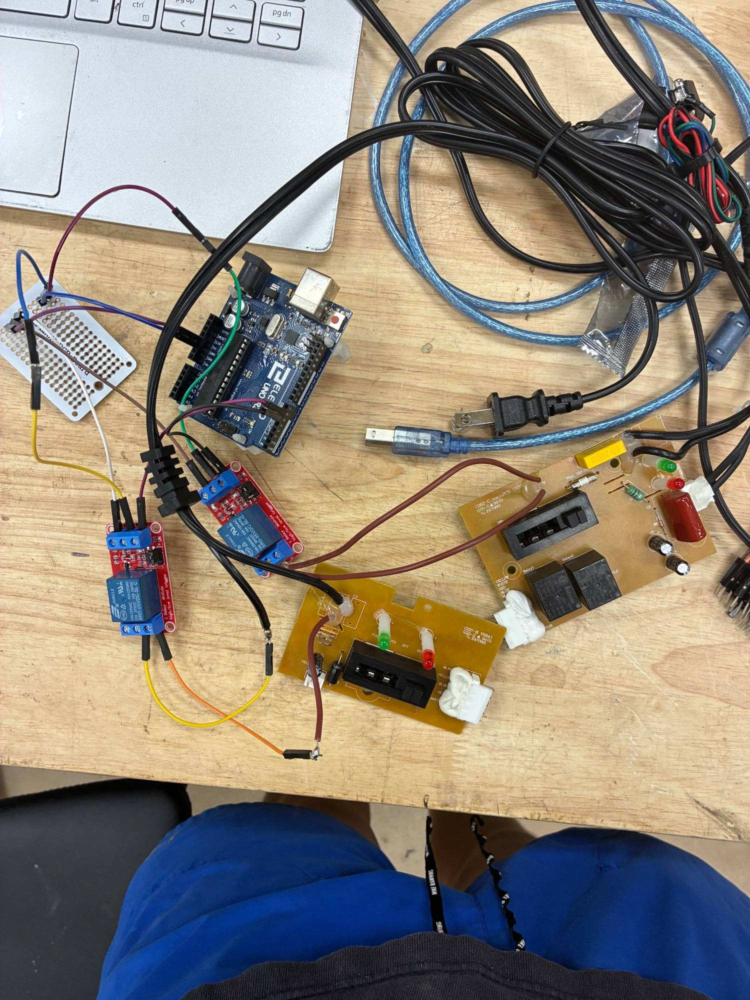
03
Stage 2 · Dehydrator
Moisture creates poor extrusion quality. I used SolidWorks thermal analysis to develop the heated airflow path, then integrated PTC heaters, fans, thermistors, and hygrometers for closed-loop drying.
Wet plastic flake
Material enters with uncontrolled moisture that would create bubbles and inconsistent filament.
Heat + airflow
PTC elements and fans move controlled thermal energy through the feedstock.
Temperature + humidity
Thermistors and hygrometers close the loop instead of relying on a fixed timer.
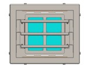
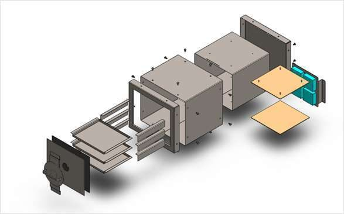
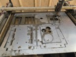
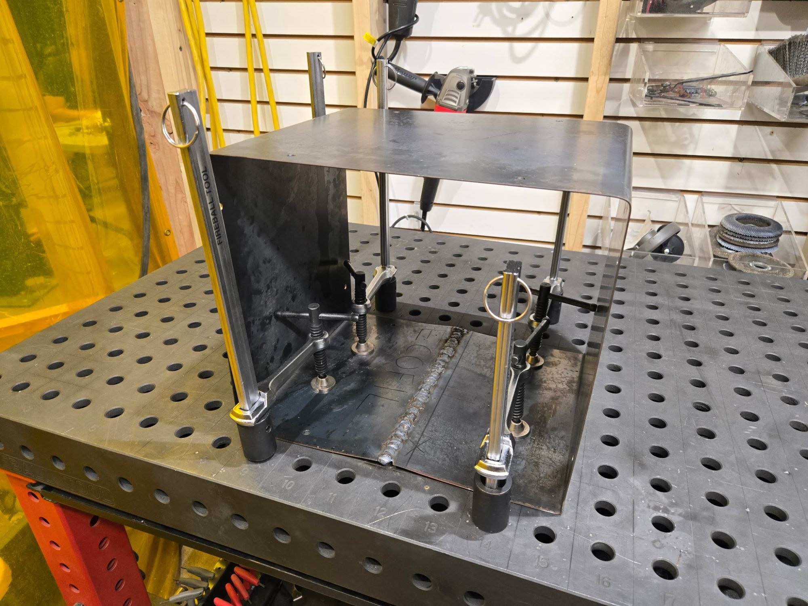
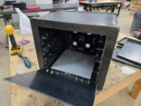
04
Stage 3 · Extruder
The extruder combines a high-voltage AC drive, controlled heating, stepper-driven spooling, and linear Hall-effect sensing. The design problem is maintaining a repeatable material flow and final diameter across connected subsystems.
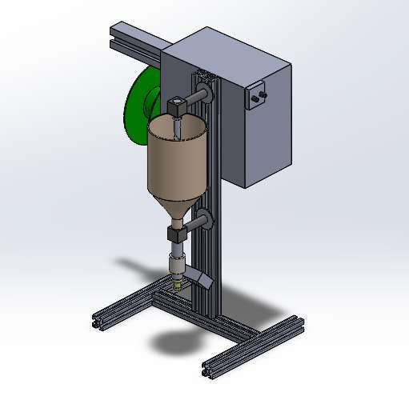
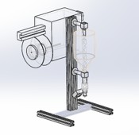
The control workflow ties the stage together: a 24 V supply feeds buck converters for the logic and fan rails, an ESP32 coordinates a TMC2208-driven NEMA 17 for spooling, and a MOSFET switches the cartridge heater against thermistor feedback.
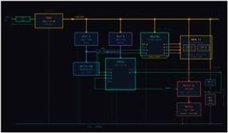
05
The team
None of this happened alone. ECOFIL is the work of a team I could not be luckier to build with. We met through Aggies Create and split the load across mechanical design, electronics, and operations, and every stage of this machine carries their work. A huge shoutout to these guys.
Delivered within budget
ECOFIL secured support from Aggies Create, Tyrex, and the TAMU Meloy program. The recycler combined mechanical fabrication, embedded control, and operations into one working development effort.